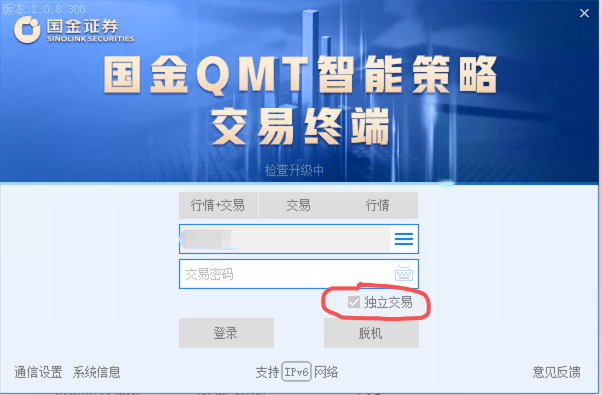
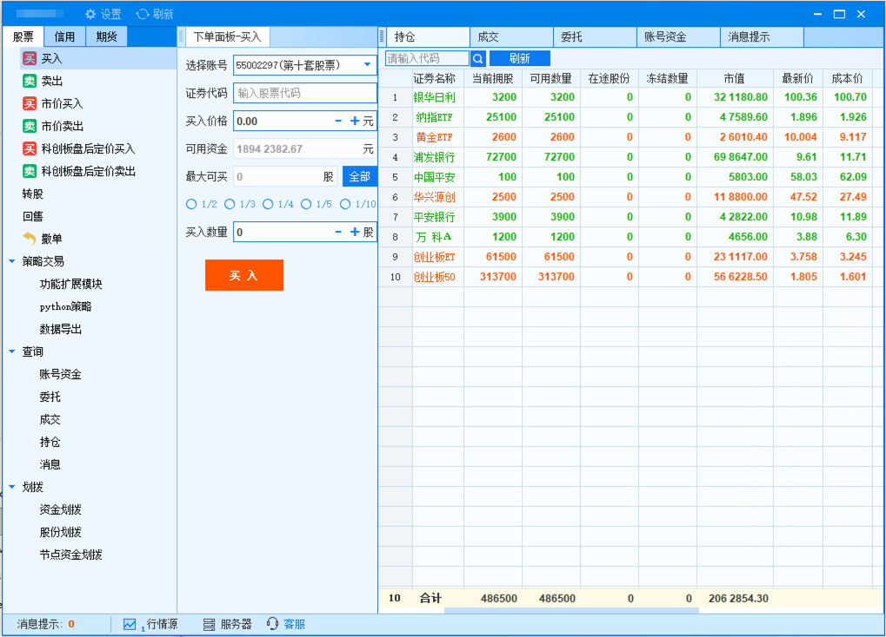
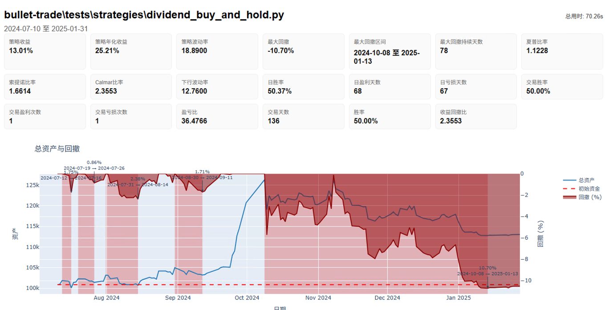
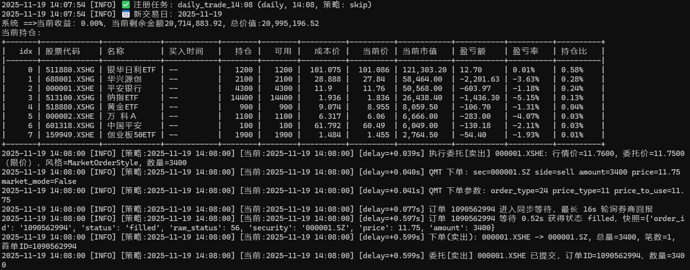

方案 A：策略在 BulletTrade 本地直接运行¶
这一条路的意思是：
- 策略主体在你自己的机器或服务器运行
- BulletTrade 负责调度、取数、计算信号和下单
- QMT / MiniQMT 与策略放在同一台 Windows 机器上运行
适合谁¶
优先考虑下面这些：
- 均线、动量、成交额过滤、ETF 轮动、网格、择时
- 以量价数据为主的日频或分钟频策略
- 主要依赖通用聚宽风格 API，而不是平台侧研究环境
- 你愿意自己掌控日志、部署和运行状态
第一步：统一准备¶
1. 先理解机器角色¶
在这套方案里，常见角色只有 2 个：
- BulletTrade：负责本地策略执行
- QMT / MiniQMT：真正连券商执行下单
最关键的一点是：
- QMT / MiniQMT 和 BulletTrade 应该放在同一台 Windows 机器上
2. 建议的基础准备¶
- 已按 环境准备：先安装 Python，再创建虚拟环境 完成 Python 安装
- 已安装并登录的 QMT，并且该环境支持 MiniQMT
- 一台可以运行 QMT / MiniQMT 的 Windows 机器
这里有两个关键要求：
- 后面的本地取数和实盘链路，默认都要能访问
userdata_mini - 登录时请使用 独立交易 方式启动 QMT
可以参考下面这两张图： 登录要选择独立交易！


3. 先完成共享环境准备文档¶
如果你现在还没有装 Python，或者命令行里还不能正常执行：
python --versionpip --version
请先完成这篇：
做完以后，再继续本页后面的步骤。
第二步：先跑一个最简单的回测¶
不建议第一枪就直接拿复杂策略上实盘。
先确认 Python、BulletTrade、MiniQMT 数据和最小策略链路都没问题。
如果你还不知道 .env 是什么，或者不知道怎么在 Windows 里创建这个文件，先看：
下面这个代码块不是命令行命令，而是要写进 .env 文件里的内容。
先准备一个最小 .env：
DEFAULT_DATA_PROVIDER=qmt
QMT_DATA_PATH=C:\QMT\userdata_mini
QMT_ACCOUNT_ID=123456
再新建一个最简单的策略文件，例如 my_first_strategy.py：
from bullet_trade.core.api import *
def initialize(context):
set_benchmark('000300.XSHG')
g.stock = '510300.XSHG'
g.has_bought = False
run_daily(market_open, time='open')
def market_open(context):
if not g.has_bought:
order_value(g.stock, context.portfolio.available_cash)
g.has_bought = True
log.info(f"买入 {g.stock}，金额={context.portfolio.available_cash:.2f}")
运行：
bullet-trade backtest my_first_strategy.py \
--start 2024-01-01 \
--end 2024-06-01 \
--benchmark 000300.XSHG \
--output backtest_results/first

第三步：最简单的部署方式，BulletTrade 和 QMT 在同一台 Windows 机器¶
这是最建议新手先走通的方式。
下面这个代码块同样是写进 .env 文件里的内容，不是直接输入到命令行的命令。
最小 .env：
DEFAULT_DATA_PROVIDER=qmt
DEFAULT_BROKER=qmt
QMT_DATA_PATH=C:\QMT\userdata_mini
QMT_ACCOUNT_ID=123456
运行：
bullet-trade live my_first_strategy.py --broker qmt
第四步：先跑通最小实盘链路，再替换成复杂策略¶
建议顺序：
- 先用最小策略跑回测
- 再用最小策略跑
live - 确认日志里能看到策略启动、调度触发、账户信息和下单结果
- 最后再替换成复杂策略
下面这种日志，才说明本地直跑链路基本正常：

常见坑¶
1. 不要第一步就直接拿复杂策略做验证¶
复杂策略没信号时，你很难第一时间判断是：
- 环境没通
- 选股没通
- 数据没通
- 函数不兼容
- 还是单纯当天没有信号
2. QMT_DATA_PATH 要写正确¶
QMT 数据目录要写到 .env 的 QMT_DATA_PATH。
3. 本地运行没有行情或数据不对¶
优先排查：
DEFAULT_DATA_PROVIDER是否设置正确QMT_DATA_PATH是否指向正确的userdata_mini- QMT / MiniQMT 本地是否已经准备好对应数据
- 代码格式是否统一为
.XSHG/.XSHE
4. 代码能回测，实盘却不工作¶
常见原因：
- 回测和实盘使用的本地数据目录、数据下载范围或频率不一致
- 回测是日频，实盘是分钟频
- 回测只验证了策略逻辑，没有验证真实下单链路
- 回测里有信号，实盘当日未必有信号
正式上线前检查清单¶
- 你已经确认本策略适合方案 A
- 你已经跑通最小回测
- 你已经跑通最小实盘链路
- 你已经确认 QMT 登录正常
- 你已经确认
QMT_DATA_PATH正确 - 你已经先用最小资金或模拟环境验证
- 你已经能在日志里区分“没有信号”和“有信号但下单失败”